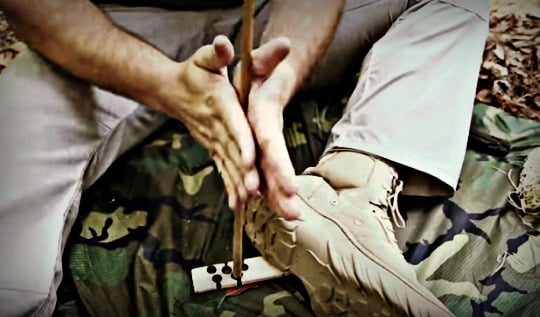
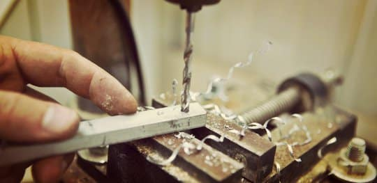

The simplest way to create enough incendiary friction is with a setup called a fire drill.
A fire drill looks exactly like it sounds.
It’s a drill made of sticks and wood.

The overall setup mirrors the design of a drill press you would see in a metal fabrication shop.

It’s a combination of a long, straight, dry, sturdy stick with one end sharpened to a point and a flat piece of wood.
The stick’s sharp tip is set down at a perpendicular angle onto a flat piece of wood called a fireboard.
But before drilling, being successful with this method begins with the proper material selection: fireboard and sticks.
As we touched on early in this article, the wood materials must be dry.
The drier, the better.
Once a fireboard and stick have been procured, it’s time to focus on creating an enormous amount of friction.
Now with this fire drill setup, you place your open hands on either side of the stick.
Palms flat, stick between palms and you rub your hands together making the stick twirl.
The twirling action of the stick then transfers rotational energy via friction at the point of contact between the stick and the fireboard.
Pro Tip: Placing your foot on the fireboard will hold it steady while you are twirling.
With a hand drill method, the friction is created by twirling the pointed stick with your hands while at the same time adding downward pressure through the stick into the fireboard.
The combination of spinning and pressure, over a period of time, creates the friction buildup needed to create a hot ember.
Pro Tip: Make sure you make a small notch in the fireboard for the tip of your fire drill stick to rest in. That shallow notch is where you’ll focus the friction to create a hot ember.
The notch also helps to ensure your drill stick doesn’t wobble all over the fireboard.
You’ll also need to add a side notch on the board.
The reason for the side notch is that when you are creating friction the hot wood fibers need some oxygen and also need a place to build up.
Without a notch, the hot wood fibers have nowhere to build up, and it will take much longer to create a hot ember.
Once set up, the process is simple (but not suggesting it’s easy).
Just give this setup enough friction (energy) to turn the contact point of the stick and board into a hot coal or ember.
A hot ember is the Holy Grail of creating a fire with sticks.
This sounds simple, right?
Well, it is, in theory, but here’s the catch.
While rubbing your hands together to twirl the stick, you also have to push down to create pressure.
Because without downward pressure, you won’t be able to create enough friction to turn the point of contact into a small hot ember.
Significant amounts of friction are created only by the combination of 1) fast rotation and 2) downward pressure.
And significant amounts of friction are necessary.
It takes a tremendous quantity of twirling and pressure over time to create an ember hot enough to light tinder.
So you’ll need to twirl a lot.
And then twirl, twirl, twirl, and twirl some more until the end of the fire drill rubbing against the fireboard produces a whisper of smoke.
When you see that whisper of smoke, you’re not done but you’re making progress. You’ll need to dig deep and twirl with even more vigor.
If you pause to rest, even for a second or two, the friction you’ve worked so hard to build up will be lost.
So no breaks. If you want to succeed, you must keep twirling…
The goal is to twirl until the tip of the fire drill becomes hot enough to grow into a small, very hot ember.
Once you have an ember, you can stop twirling and transfer the coal from the fireboard to tinder.
You don’t need to rush here, a good ember will be useful for a couple of minutes, but also don’t waste time.
Place the ember into the tinder bundle and blow on the ember to give it some oxygen.
Oxygen will stoke the ember and help it to transfer the ember’s energy into the tinder material.
If successful, the tinder bundle will begin smoking and will eventually burst aflame.
Then just work your way up the fire ladder from ember to fire.
Congratulations! You have now successfully started a fire with sticks using the hand drilling methodology.
Now if a picture is worth a thousand words, then a good video is worth at least 100 times that.
So here is an excellent video that goes into the details on how to start a fire using the hand drill method.
As simple as this method seems on paper, it’s not nearly as easy as it sounds.
To be honest, this is one of the most challenging ways to start a fire with sticks and requires a ton of determination.
Why? Because not only will the contact point become affected by the forces of friction, so will your hands.
Your hands will quickly become hot and sore. If your hands are not used to this sort of abuse, they will soon become blistered and bloody as well.
And that’s the rub.
Often the pain in your hands becomes too great to continue before you can establish a glowing ember.
It may become so painful that you will swear, curse, and give up in a heap of sweaty, frustrated agony.
So can a fire be started with a fire drill setup using only your hands?
Yes, it is possible, but unless your calloused hands are accustomed to this sort of abuse, it’s not probable.
However, all is not lost.
The way I see it, you have two options to help improve your odds of success.